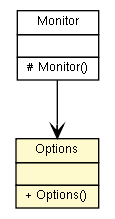

fr.univrennes1.cri.jtacl.core.monitor
Class Options

java.lang.Object
 fr.univrennes1.cri.jtacl.core.monitor.Options
fr.univrennes1.cri.jtacl.core.monitor.Options
public class Options
- extends java.lang.Object
- Author:
- Patrick Lamaiziere
| Methods inherited from class java.lang.Object |
clone, equals, finalize, getClass, hashCode, notify, notifyAll, toString, wait, wait, wait |
Options
public Options()
getMaxHop
public int getMaxHop()
setMaxHop
public void setMaxHop(int maxHop)
getDebugLevel
public java.util.logging.Level getDebugLevel()
setDebugLevel
public void setDebugLevel(java.util.logging.Level level)
getNotifyLevel
public java.util.logging.Level getNotifyLevel()
setNotifyLevel
public void setNotifyLevel(java.util.logging.Level level)
getConfigLevel
public java.util.logging.Level getConfigLevel()
setConfigLevel
public void setConfigLevel(java.util.logging.Level level)
setOption
public void setOption(java.lang.String optionName,
java.lang.String value)
getOptionsList
public java.lang.String getOptionsList()
Copyright © 2010. All Rights Reserved.